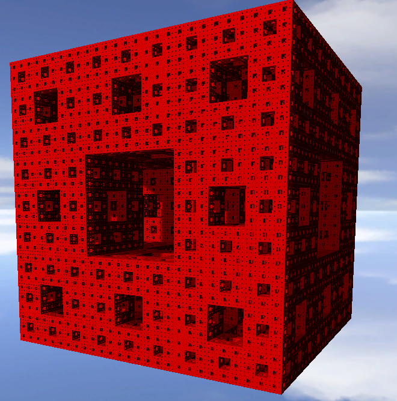

Una proiezione prospettica, usata nelle tecniche di Raymarching e Raytracing, simula la classica macchina fotografica e permette di rappresentare oggetti come noi li vediamo nella realtà. Essa è caratterizzata
da raggi proiettanti non paralleli tra loro, ma contenuti in un cono ottico che li raccoglie in un punto di osservazione rappresentato dall'occhio umano.
Esempio di proiezione prospettica con piano prospettico (riquadro grigio) dove verrà rappresentata l'immagine.
RayMarching
La tecnica del RayMarching consiste nel proiettare un raggio per ogni pixel dell'immagine a schermo, lo si fa marciare in una direzione predeterminata e si verifica se la punta del raggio si interseca con una figura nello
spazio dell'applicazione; partendo dalla telecamera, si valuta la distanza minima tra la camera e l'oggetto più vicino e si prolunga il raggio di quella distanza, se non esiste un intersezione, il raggio viene prolungato nella
stessa direzione per una distanza pari alla distanza che separa la punta del raggio dalla figura più vicina ad esso; se esiste una intersezione in un determinato punto dello spazio tridimensionale, allora quel punto verrà colorato e illuminato
per essere mostrato a schermo. Il procedimento termina comunque una volta superata una distanza massima predeterminata dalla telecamera.
Per il RayMarching, viene selezionata una posizione per la telecamera, viene messa una griglia
di fronte ad essa e inviati raggi che, dalla telecamera, attraversano ogni casella della griglia, dove ogni casella rappresenta un pixel dell'immagine finale.
Proiezione prospettica di una figura sullo schermo mediante Raymarching.
Di queste figure si conosce solo la posizione nello spazio [x, y, z], non la forma, che verrà computata in tempo reale, e pertanto è necessario un modo per determinare la distanza della punta del raggio con le figure nel mondo che si vogliono
rappresentare.
Algoritmo
L'algoritmo richiede come Parametri:
rayOrigin: origine del raggio (la telecamera)
rayDirection: direzione del raggio
depth: profondita di campo per la visione
e Costanti:
maxRayDistance: distanza massima che può percorrere il raggio.
maxRaySteps: numero massimo di step che può eseguire il raggio.
ACCURACY: distanza minima del raggio dalla figura per considerarla toccata.
questa costante è modificabile nell'applicazione
impostare un valore più alto implica che il raggio "tocchi" prima la figura , fermandone anticipatamente il cammino e l'esecuzione dell'algoritmo, rendendo la figura calcolata più arrotondata.
Ad ogni passo di avanzamento del raggio, viene controllato se ha superato la sua distanza massima; se il risultato di questo controllo da esito positivo significa che il raggio non ha incontrato ostacoli sul suo percorso, pertanto non è necessario
calcolare il colore del pixel e l'algoritmo termina.
Se da esito negativo, viene aggiornata la posizione del raggio, che corrisponde alla posizione originale più un incremento pari al vettore della direzione del raggio moltiplicato
per la distanza dall'oggetto più vicino.
Con questa nuova posizione (pos) viene calcolata la distanza d con la figura più vicina mediante la funzione distanceField; se la distanza è minore della
ACCURACY significa che il raggio tocca la figura, quindi è possibile colorare e applicare luci ed ombre su quel pixel in quella posizione. Se invece non tocca nessuna figura, si incrementa la distanza t percorsa e
si ricomincia l'algoritmo con la nuova posizione della punta del raggio.
La funzione distanceField restituisce un vettore di 4 elementi [r, g, b, w]: i primi 3 rappresentano il colore dell'oggetto, mentre w rappresenta la distanza tra raggio e figura più vicina.
Signed Distance Function (SDF)
Una SDF è una funzione che prende in input una posizione P nello spazio e restituisce la distanza tra il punto P e la figura che rappresenta, con il segno, poiché il segno indica se il punto P è fuori (distanza positiva), dentro (distanza negativa)
o sulla superficie (distanza zero) della figura.
Un esempio basilare è la SDF di una sfera dove la distanza tra la punta di un raggio P e una sfera è rappresentato dalla distanza del punto P dal centro della sfera meno il raggio.
p rappresenta la distanza di P dal centro della sfera.
Nell'algoritmo p rappresenta la distanza di P dal centro della sfera.
In questi esempi possiamo vedere che i punti sono sulla superficie nel primo caso, dentro alla sfera nel secondo e fuori dalla sfera nel terzo.
Dato che con le SDF è possibile stabilire la distanza esatta tra la punta del raggio e le figure che sono nel mondo, invece di incrementare la lunghezza del raggio di una dimensione fissa relativamente piccola, per evitare di entrare dentro una
figura, è possibile prolungare il raggio di una distanza massima pari alla distanza che divide la punta dalla figura più vicina, evitando così di attraversare la superficie.
Questa tecnica di tracciamento del raggio è chiamata Sphere Tracing.
Nella
prima figura, p0 rappresenta la telecamera e la linea blu rappresenta la direzione del raggio. Nel primo step viene calcolata la distanza minima tra la telecamera e la superficie della scena (bordo nero); siccome il
punto sulla superficie più vicino a p0 non ostacola il raggio, è possibile farlo marciare ancora fino a raggiungere una superficie in p4.
Step compiuti dal raggio.
Vista animata in 2D e 3D della tecnica.
Nella funzione distanceField utilizzata nell'algoritmo visto in precedenza, sono raggruppate le SDF dei frattali che si possono rappresentare con questa applicazione.
Frattali 3D
Cos'è un frattale? Un frattale è un oggetto geometrico dotato di omotetia interna: si ripete nella sua forma allo stesso modo su scale diverse, e dunque ingrandendo una qualunque sua parte si ottiene una figura simile all'originale.
C'è una differenza sostanziale tra un oggetto geometrico euclideo ed un frattale:
Un oggetto euclideo si costruisce generalmente utilizzando una funzione sul piano cartesiano.
Un oggetto frattale si basa su un algoritmo, quindi un metodo che deve essere utilizzato per disegnare l'oggetto.
L'algoritmo non è mai applicato una volta sola, ma è iterato un numero di volte teoricamente infinito; infatti ad ogni iterazione l'oggetto si avvicina sempre di più al risultato finale (per approssimazione) e dopo un certo numero di iterazioni
l'occhio umano non riesce più a distinguere le modifche oppure l'hardware di un computer non è più in grado di migliorare ulteriormente il disegno.
I frattali possono essere definiti con delle SDF e quindi essere
rappresentati con la tecnica del RayMarching.
Tetraedro di Sierpinski
Il triangolo di Sierpinski è un frattale basato su un triangolo equilatero, creato dividendolo in 4 triangoli più piccoli, rimuovendo il triangolo centrale e ripetendo i passi sui triangoli rimanenti. Applicando questi passi nello spazio 3D si viene a creare un tetraedro formato da 4 tetraedri minori con uno spazio vuoto al centro.
Nelle
figure è possibile vedere un esempio della creazione del triangolo di Sierpinski e un estrapolato dell'applicazione del tetraedro.
Costruzione del triangolo di Sierpinski.
Tetraedro calcolato dall'applicazione.
L'algoritmo necessita di:
pos : posizione del raggio nello spazio 3D
tetraIterations : numero di iterazioni dell'algoritmo
scale : scala del frattale che ne definisce la dimensione
Per cominciare vengono definiti i 4 vertici del tetraedro, con un offset dato dalla scala di rappresentazione. Ɐ iterazione vengono fatti confronti per stabilire quale vertice è il più vicino al punto.
Successivamente
viene raddoppiato il vettore pos e sottratto il vettore che corrisponde al vertice più vicino.
Alla fine delle iterazioni, l'algoritmo restituisce la lunghezza del vettore pos divisa per l'elevamento a
potenza di 2 con il numero totale di iterazioni.
Paxis
Questo frattale utilizza come parametri:
pos: la posizione del raggio nello spazio 3D.
iter1 e iter2: il numero di iterazioni per i 2 insiemi di operazioni.
mult: un moltiplicatore che controlla la dimensione degli spazi vuoti nel frattale
un valore troppo elevato farà sparire il frattale.
swapA e swapB: permettono di scambiare le funzioni utilizzate all'interno dei due cicli.
sono possibili 4 combinazioni distinte che producono il medesimo numero di frattali distinti.
scale: stabilisce la dimensione finale del frattale.
paxisAnimate: attiva/disattiva l'animazione del frattale.
La creazione di 4 frattali distinti dipende da due funzioni simili che usano come parametro una posizione p:
Le due funzioni paxis ricevono come parametro in ingresso un vettore p, ne prendono il vettore assoluto a (le cui coordinate sono i valori assoluti delle coordinate di p) e restituiscono il prodotto
scalare tra la normalizzazione di p e il massimo tra i moduli di un vettore di zeri e la normalizzazione del vettore a meno, il massimo in un caso e il minimo nell'altro, tra i
moduli del vettore a riordinato in due modi distinti.
Render dei 4 frattali calcolabili con le combinazioni di SwapA e SwapB.
Mandelbulb 3D
L'insieme di Mandelbrot è l'insieme dei numeri complessi c tali per cui la successione di seguito è limitata.
Poichè non esiste una forma canonica tridimensionale dell'insieme di Mandelbrot, non esistendo un corrispettivo tridimensionale dello spazio bidimensionale dei
numeri complessi, si utilizza una combinazione di quaternioni e numeri bi-complessi per rappresentare questo insieme in 4 dimensioni, creando cosi il Mandelbulb.
Insieme di Mandelbrot in 2D.
Mandelbulb calcolato nell'applicazione.
La SDF usata nell'applicazione si basa sulla formula creata da Daniel White e Paul Nylander che utilizza le coordinate sferiche. La
loro formula per la N-esima potenza del vettore v={x,y,z} in ℝ3 è:
con:
L'algoritmo prende come parametri in ingresso:
p: posizione della punta del raggio.
mandelIterations: numero di iterazioni per il calcolo del frattale.
animateMandel: applica un'animazione in cui il frattale si ripiega su se stesso.
rotate: applica una rotazione al frattale.
alternative: cambia l'uso delle funzioni di seno e coseno per creare un Mandelbulb alternativo.
La costruzione della spugna segue un semplice algoritmo:
Si comincia da un cubo;
Si divide ogni faccia del cubo in 9 quadrati, come nel cubo di Rubik, creando cosi 27 nuovi cubi con lato 1/3 dell'originale;
Rimuovere ogni cubo minore situato al centro di ogni faccia, compreso quello situato al centro del cubo originale. Il risultato sono 20 cubi in totale;
Ripeti gli step 2 e 3 per ogni cubo minore restante e continua ad iterare ad infinitum.
A lato è possibile osservare una rappresentazione animata dell'algoritmo che produce una spugna di Menger di livello 4 (l'algoritmo viene applicato 4 volte).

Spugna di livello 6 creata dall'applicazione.
L'algoritmo prende come parametri in ingresso:
z: posizione della punta del raggio.
spongeIterations: numero di iterazioni dell'algoritmo.
animate: anima la spugna con un effetto a fisarmonica.
Ɐ iterazione viene preso il vettore assoluto e vengono fatti dei confronti tra le combinazioni di coordinate e se non rispettano la condizione dei confronti, vengono scambiate tra di loro. Finiti
i confronti viene incrementato il vettore della posizione e se la coordinata z risultasse negativa verrebbe incrementata. Successivamente viene applicato uno spiazzamento pari al vettore unitario e applicata l'animazione
qual'ora fosse attiva. In fine viene calcolata e restituita la distanza.
MandelBox
Il MandelBox è un frattale di forma scatolare, definito in modo similare all'insieme di Mandelbrot, ma a differenza di esso può essere esteso ad un numero infinito di dimensioni.
MandelBox calcolato nell'applicazione.
Questo frattale si ripiega su se stesso contemporaneamente in modo sferico, come si può vedere dalle porzioni tondeggianti in figura, e come una scatola, che gli fornisce la tipica forma scatolare.
I parametri in ingresso all'algoritmo sono:
p: posizione del raggio rispetto al frattale.
mboxIterations: numero di iterazioni dell'algoritmo.
animateBox: flag che permette al frattale di dispiegarsi e ripiegarsi su se stesso.
A causa del carico computazionale che richiede il calcolo di questo frattale, l'animazione è limitata per non gravare ulteriormente sulla macchina.
mboxSize: definisce la dimensione della scatola.
minRadius: definisce il raggio minimo per la ripiegatura sferica.
fixedRadius: definisce un raggio fisso di ripiegatura.


{kind=link}
{kind=link}
{kind=link}
{kind=link}
{kind=link}
{kind=link}
{kind=link}
{kind=link}
{kind=link}